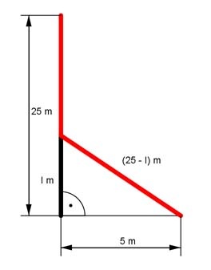

Pythagoras Aufgabe 15 Ein 25 m hoher Baum ist so abgeknickt, dass seine Spitze 5 m von seinem Fuß entfernt aufliegt. In welcher Höhe in m ist er abgeknickt?  Der abgeknickte Teil = (25 - l) m lang. (25 - l)² = l² + 5² 625 - 50l + l² = l² + 25 | -l² 625 - 50l = 25 | +50l 625 = 50l + 25 | -25 600 = 50l | :50 12 = l Der Baum ist in einer Höhe von 12 m abgeknickt.